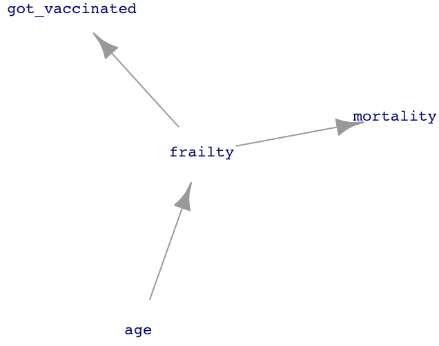
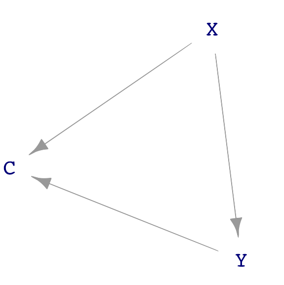

25 Confounding
“Economic’s reputation for dismality is a bad rap. Economics is as exciting as any science can be: the world is our lab, and the many diverse people in it are our subjects. The excitement in our work comes from the opportunity to learn about cause and effect in human affairs.”—Joshua Angrist and Jorn-Steffen Pischke (2015), Mastering Metrics: The path from cause to effect
Many people are concerned that the chemicals used by lawn-greening companies are a source of cancer or other illnesses. Imagine designing a study that could confirm or refute this concern. The study would sample households, some with a history of using lawn-greening chemicals and others who have never used them. The question for the study designers: What variables to record?
An obvious answer: record both chemical use and a measure of health outcome, say whether anyone in that household has developed cancer in the last five years. For simplicity in the presentation, we will suppose that the two possible levels of grass treatment are “organic” or “chemicals.” As for illness, the levels will be “cancer” or “not.”
Here are two simple DAG theories:
\[\text{illness} \leftarrow \text{grass treatment}\ \ \ \ \text{ or }\ \ \ \ \ \text{illness} \rightarrow \text{grass treatment}\]
The DAG on the left expresses the belief among people who think chemical grass treatment might cause cancer. But belief is not necessarily reality, so we should consider alternatives. If only two variables exist, the right-hand DAG is the only alternative.
Section 24.3 demonstrated that it is not possible to distinguish between \(Y \leftarrow X\) and \(X \rightarrow Y\) purely by modeling data. Here, however, we are constructing theories. We can use the theory to guide how the data is collected. For example, one way to avoid the possibility of \(\text{illness} \rightarrow \text{grass treatment}\) is to include only households where cancer (if any) started after the grass treatment. Note that we are not ignoring the right-hand DAG; we are using the study design to disqualify it.
The statistical thinker knows that covariates are important. But which covariates? Appropriate selection of covariates requires knowing a lot about the “domain,” that is, how things connect in the real world. Such knowledge helps in thinking about the bigger picture and, in particular, possible covariates that connect plausibly to the response variable and the primary explanatory variable, grass treatment.
For now, suppose that the study designers have not yet become statistical thinkers and have rushed out to gather data on illness and grass treatment. Here are a few rows from the data (which we have simulated for this example):
| grass | illness |
|---|---|
| organic | not |
| chemicals | not |
| chemicals | not |
| chemicals | not |
| organic | not |
| organic | not |
| organic | not |
| organic | not |
| chemicals | cancer |
| organic | not |
Analyzing such data is straightforward. First, check the overall cancer rate:
We are using linear regression where the intercept for
illness ~ 1 equals the proportion of specimens where the illness value is one.# overall cancer rate
Cancer_data |>
mutate(illness = zero_one(illness, one="cancer")) |>
model_train(illness ~ 1, family = "lm") |>
conf_interval()| term | .lwr | .coef | .upr |
|---|---|---|---|
| (Intercept) | 0.01612 | 0.026 | 0.03588 |
In these data, 2.6% of the sampled households had cancer in the last five years. How does the grass treatment affect that rate? First, train a model…
mod <- Cancer_data |>
mutate(illness = zero_one(illness, one="cancer")) |>
model_train(illness ~ grass, family = "lm")
mod |> model_eval(skeleton = TRUE)| grass | .lwr | .output | .upr |
|---|---|---|---|
| organic | -0.277035 | 0.0350584 | 0.3471519 |
| chemicals | -0.299753 | 0.0124688 | 0.3246907 |
For households whose lawn treatment is “organic,” the risk of cancer is higher by 2.3 percentage points compared to households that treat their grass with chemicals. We were expecting the reverse, but the data seemingly disagree. On the other hand, there is sampling variability to take into account. Look at the confidence intervals:
mod |> conf_interval()| term | .lwr | .coef | .upr |
|---|---|---|---|
| (Intercept) | -0.0031034 | 0.0124688 | 0.028041 |
| grassorganic | 0.0024692 | 0.0225896 | 0.042710 |
The confidence interval on grassorganic does not include zero, but it comes close. So, might the chemical treatment of grass be protective against cancer? Not willing to accept what their data tell them, the study designers finally do what they should have from the start: think about covariates.
This is not an endorsement of the “keep searching until you find what you expected” research style. We will return to the negative consequences for the reliability of results from adopting this style in Lesson 29.
One theory—just a theory—is this: Green grass is not a necessity, so the households who treat their lawn with chemicals tend to have money to spare. Wealthier people also tend to have better health, partly because of better access to health care. Another factor is that wealthier people can live in less polluted neighborhoods and are less likely to work in dangerous conditions, such as exposure to toxic chemicals. Such a link between wealth and illness points to a DAG hypothesis where “wealth” influences how the household’s grass is treated and wealth similarly influences the risk of developing cancer. Like this:
A description of this causality structure is, “The effect of grass treatment on illness is confounded by wealth.” The Oxford Languages dictionary offers two definitions of “confound.”
- Cause surprise or confusion in someone, especially by acting against their expectations.
- Mix up something with something else so that the individual elements become difficult to distinguish.
This second definition carries the statistical meaning of “confound.”
The first definition seems relevant to our story since the protagonist expected that chemical use would be associated with higher cancer rates and was surprised to find otherwise. Nevertheless, the statistical thinker does not throw up her hands when dealing with mixed-up causal factors. Instead, she uses modeling techniques to untangle the influences of various factors.
Using covariates in models is one such technique. Our wised-up study designers go back to collect a covariate representing household wealth. Here is a glimpse at the updated data.
| wealth | grass | illness |
|---|---|---|
| 1.4283990 | organic | not |
| 0.0628559 | chemicals | not |
| 0.4382804 | chemicals | not |
| 0.6084487 | chemicals | not |
| 0.8033695 | organic | not |
| -0.9367287 | organic | not |
| 0.6664468 | organic | not |
| -1.2445977 | organic | not |
| -1.3194594 | chemicals | cancer |
| -1.6162391 | organic | not |
Having measured wealth, we can use it as a covariate in the model of illness. We use logistic regression for this model with multiple explanatory variables to avoid the out-of-bounds problem introduced in Section 21.3.
Cancer_data |>
mutate(illness = zero_one(illness, one="cancer")) |>
model_train(illness ~ grass + wealth) |>
conf_interval()| term | .lwr | .coef | .upr |
|---|---|---|---|
| (Intercept) | -5.95 | -4.75 | -3.820 |
| grassorganic | -2.16 | -1.02 | 0.222 |
| wealth | -2.92 | -2.25 | -1.670 |
With wealth as a covariate, the model shows that (all other things being equal) “organic” lawn treatment reduces cancer risk. However, we do not see this directly from the grass and illness variables because all other things are not equal: wealthier people are more likely to use chemical lawn treatment. (Remember, this is simulated data. Do not conclude from this example anything about the safety of the chemicals used for lawn greening.)
Example: The flu vaccine
As you know, people are encouraged to get vaccinated before flu season. This recommendation is particularly emphasized for older adults, say, 60 and over.
In 2012, The Lancet, a leading medical journal, published a systematic examination and comparison of many previous studies. The Lancet article describes a hypothesis that existing flu vaccines may not be as effective as originally found from modeling mortality as a function of vaccination.
A series of observational studies undertaken between 1980 and 2001 attempted to estimate the effect of seasonal influenza vaccine on rates of hospital admission and mortality in [adults 65 and older]. Reduction in all-cause mortality after vaccination in these studies ranged from 27% to 75%. In 2005, these results were questioned after reports that increasing vaccination in people aged 65 years or older did not result in a significant decline in mortality. Five different research groups in three countries have shown that these early observational studies had substantially overestimated the mortality benefits in this age group because of unrecognized confounding. This error has been attributed to a healthy vaccine recipient effect: reasonably healthy older adults are more likely to be vaccinated, and a small group of frail, undervaccinated elderly people contribute disproportionately to deaths, including during periods when influenza activity is low or absent.

Figure 25.1 presents a network of causal influences that could shape the “healthy vaccine recipient.” People are more likely to become frail as they get older. Frail people are less likely to get vaccinated but more likely to die in the next few months. The result is that vaccination is associated with reduced mortality, even if there is no direct link between vaccination and mortality.
Such a study of earlier studies is called a meta-analysis.
Block that path!
Let us look more generally at the possible causal connections among three variables: X, Y, and C. We will stipulate that X points causally toward Y and that C is a possible covariate. Like all DAGs, there cannot be a cycle of causation. These conditions leave three distinct DAGs that do not have a cycle, as shown in Figure 25.2.



C plays a different role in each of the three dags. In sub-figure (a), C causes both X and Y. In (b), part of the way that X influences Y is through C. We say, in this case, “C is a mechanism by which X causes Y. In sub-figure (c), C does not cause either X or Y. Instead, C is a consequence of both X and Y.
In any given real-world context, good practice calls for considering each possible DAG structure and concocting a story behind it. Such stories will sometimes be implausible, but there can also be surprises that give the modeler new insight.
Chemists often think about complex molecules by focusing on sub-modules, e.g. an alcohol, an ester, a carbon ring. Similarly, there are some basic, simple sub-structures that often appear in DAGs. Figure 25.3 shows four such structures found in Figure 25.2.


A “direct causal link” between X and Y. There are no intermediate nodes.
A “causal path” from X to C and on to Y. A causal path is one where, starting at the originating node, flow along the arrows can get to the terminal node, passing through all intermediate nodes.
A “correlating path” from Y through C to X. Correlating paths are distinct from causal paths because, in a correlating path, there is no way to get from one end to the other by following the flows.
A “common consequence,” also known as a “collider”. Both X and Y are causes of C and there is no causal flow between X and Y.
Look back to Figure 25.2(a), where wealth is a confounder. A confounder is always an intermediate node in a correlating path.
Including a covariate either blocks or opens the pathway on which that covariate lies. Which it will be depends on the kind of pathway. A causal path, as in Figure 25.3(b), is blocked by including the covariate. Otherwise, it is open. A correlating path (Figure 25.3(c)) is similar: the path is open unless the covariate is included in the model. A colliding path, as in Figure 25.3(d), is blocked unless the covariate is included—the opposite of a causal path.
Where do the blocking rules come from?
To understand these blocking rules, we need to move beyond the metaphors of ants and flows. Two variables are correlated if a change in one is reflected by a change in the other. For instance, if a specimen with large X tends also to have large Y, then across many specimens there will be a correlation between X and Y. There is a correlation as well if specimens with large X tend to have small Y. It’s only when changes in X are not reflected in Y, that is, specimens with large X can have either small, middle, large values of Y, that there will not be a correlation.
We will start with the situation where C is not used as a covariate: the model y ~ x.
Perhaps the easiest case is the correlating path (Figure 25.3(c)). A change in variable C will be propagated to both X and Y. For instance, suppose an increase in C causes an increase in X and separately causes an increase in Y. Then X and C will tend to rise and fall together from specimen to specimen. This is a correlation; the path X \(\leftarrow\) C \(\rightarrow\) is not blocked. (We say, “an increase in C causes an increase in X” because there is a direct causal link from C to X.)
For the causal path (Figure 25.3(b)), we look to changes in X. Suppose an increased X causes an increased C which, in turn, causes an increase in Y. The result is that specimens with large X and tend to have large Y: a correlation and therefore an open causal path X \(\rightarrow\) C \(\rightarrow\) Y.
For a **common consequence* (Figure 25.3(c)) the situation is different. C does not cause either X or Y. In specimens with large X, Y values can be small, medium, or large. No correlation; the path \(X \rightarrow\) C \(\leftarrow\) Y is blocked.
Now turn to the situation where C is included in the model as a covariate: y ~ x + c. As described in Lesson Chapter 12, to include C as a covariate is, through mathematical means, to look at the relationship between Y and X as if C were held constant. That’s somewhat abstract, so let’s put it in more concrete terms. We use modeling and adjustment because C is not in fact constant; we use the mathematical tools to make it seem constant. But we wouldn’t need the math tools if we could collect a very large amount of data, then select only those specimens for analysis that have the same value of C. For these specimens, C would in fact be constant; they all have the same value of C.
For the correlating path, because C is the same for all of the selected specimens, neither X nor Y vary along with C. Why? There’s no variation in C! Any increase in X from one specimen to another would be induced by other factors or just random noise. Similarly for Y. So, when C is held constant, the up-or-down movements of X and Y are unrelated; there’s no correlation between X and Y. the X \(\leftarrow\) C \(\rightarrow\) Y path is blocked.
For the causal path X \(\rightarrow\) C \(\rightarrow\) Y, because C has the same value for all specimens, any change in X is not reflected in C. (Why? Because there is no variation in C! We’ve picked only specimens with the same C value.) Likewise, C and Y will not be correlated; they can’t be because there is no variation in C even though there is variation in Y. Consequently, among the set of selected specimens where C is held constant, there is no evidence for synchronous increases and decreases in X and Y. The path is blocked.
Look now at the common consequence (Figure 25.3(c)). We have selected only specimens with the same value of C. Consider the back-story for each specimen in our selected set. How did C come to be the value that it is in order to make it into our selection? If for the given specimen X was large, then Y must have been small to bring C to the value needed to get into the selected set of specimens. Or, vice versa, if X was small then Y must have been large. When we look across all the specimens in the selected set, we will see large X associated with small Y: a correlation. Holding C constant unblocks the pathway that would otherwise have been blocked.
For simplicity, we’ll walk through those situations where specimens with large X tend to have large Y. The other case, specimens with large X having small Y, is much the same. Just change “large” to “small” when it comes to Y.
Often, covariates are selected to block all paths except the direct link between the explanatory and response variable. This means do include the covariate if it is on a correlating path and do not include it if the covariate is at the collision point.
As for a causal path, the choice depends on what is to be studied. Consider the DAG drawn in Figure 25.2(b), reproduced here for convenience:

grass influences illness through two distinct paths:
- the direct link from
grasstoillness. - the causal pathway from
grassthroughwealthtoillness.
Admittedly, it is far-fetched that choosing to green the grass makes a household wealthier. However, for this example, focus on the topology of the DAG and not the unlikeliness of this specific causal scenario.
There is no way to block a direct link from an explanatory variable to a response. If there were a reason to do this, the modeler probably selected the wrong explanatory variable.
But there is a genuine choice to be made about whether to block pathway (ii). If the interest is the purely biochemical link between grass-greening chemicals and illness, then block pathway (ii). However, if the interest is in the total effect of grass and illness, including both biochemistry and the sociological reasons why wealth influences illness, then leave the pathway open.
Don’t ignore covariates!
In 1999, a paper by four pediatric ophthalmologists in Nature, perhaps the most prestigious scientific journal in the world, claimed that children sleeping with a night light were more likely to develop nearsightedness. Their recommendation: “[I]t seems prudent that infants and young children sleep at night without artificial lighting in the bedroom, while the present findings are evaluated more comprehensively.”
This recommendation is based on the idea that there is a causal link between “artificial lighting in the bedroom” and nearsightedness. The paper acknowledged that the research “does not establish a causal link” but then went on to imply such a link:
“[T]he statistical strength of the association of night-time light exposure and childhood myopia does suggest that the absence of a daily period of darkness during early childhood is a potential precipitating factor in the development of myopia.”
“Potential precipitating factor” sounds a lot like “cause.”
The paper did not discuss any possible covariates. An obvious one is the eyesight of the parents. Indeed, ten months after the original paper, Nature printed a response:
“Families with two myopic parents, however, reported the use of ambient lighting at night significantly more than those with zero or one myopic parent. This could be related either to their own poor visual acuity, necessitating lighting to see the child more easily at night, or to the higher socio-economic level of myopic parents, who use more child-monitoring devices. Myopia in children was associated with parental myopia, as reported previously.”
Always consider possible alternative causal paths when claiming a direct causal link. For us, this means thinking about that covariates there might be and plausible ways that they are connected. Just because a relevant covariate wasn’t measured doesn’t mean it isn’t important! Think about covariates before designing a study and measure those that can be measured. When an essential blocking covariate wasn’t measured, don’t fool yourself or others into thinking that your results are definitive.
Exercises
Exercise 23.1 Q30-1
dag_draw(sim_02)
- Is
aa confounder for the relationship betweenxandy? - Is there any reason to include or exclude
aas a covariate when modelingybyx?
dag_draw(sim_03)
- Is
ga collider? Why or why not? - In studying the (lack of) direct link between
xandy, shouldgbe included as a covariate?
dag_draw(sim_04)
- Which are the exogenous nodes in
sim_04? - If modeling
cbyaandb, would includingdas a covariate induce an apparent correlation among the exogonenous nodes?
Answer
We are interested in what data modeling can and cannot tell us about the relationships in dag_04. To start, we will take a sample from dag_04. We will make the sample large so that the confidence intervals are narrow. This makes it easier to see when the modeling result does or does not capture the DAG relationships.
Samp <- sample(sim_04, n=10000)The exogenous nodes are
a,b, andc. Exogenous nodes do not have any inputs from other nodes.Compare the two models
c ~ a + bandc ~ a + b + d
Samp |> model_train(c ~ b + a) |> conf_interval()| term | .lwr | .coef | .upr |
|---|---|---|---|
| (Intercept) | -0.0162215 | 0.0033939 | 0.0230093 |
| b | -0.0260064 | -0.0063771 | 0.0132521 |
| a | -0.0121272 | 0.0075163 | 0.0271597 |
No relationship seen between either b or a and c.
Samp |> model_train(c ~ b + a + d) |> conf_interval()| term | .lwr | .coef | .upr |
|---|---|---|---|
| (Intercept) | -0.0182443 | -0.0041992 | 0.0098459 |
| b | -0.5111201 | -0.4939845 | -0.4768489 |
| a | -0.5083918 | -0.4911201 | -0.4738484 |
| d | 0.4873317 | 0.4973307 | 0.5073298 |
Including d as a covariate leads to both b and a appearing to be related to c.
dag_draw(sim_05)
dag_draw(sim_06)
dag_draw(sim_07)
dag_draw(sim_08)
dag_draw(sim_09)
dag_draw(sim_10)
sim_02: y is a collider sim_03: g is a common cause sim_04: chain
Samp <- sample(sim_02, n = 20)
Samp |> model_train(a ~ x) |> conf_interval()| term | .lwr | .coef | .upr |
|---|---|---|---|
| (Intercept) | -0.366614 | 0.2038019 | 0.7742179 |
| x | -1.051773 | -0.3812411 | 0.2892905 |
Samp |> model_train(a ~ x) |> R2()| n | k | Rsquared | F | adjR2 | p | df.num | df.denom |
|---|---|---|---|---|---|---|---|
| 20 | 1 | 0.0734477 | 1.426858 | 0.0219726 | 0.2462524 | 1 | 18 |
Samp |> model_train(a ~ x) |> regression_summary()Warning: The `tidy()` method for objects of class `model_object` is not maintained by the broom team, and is only supported through the `lm` tidier method. Please be cautious in interpreting and reporting broom output.
This warning is displayed once per session.| term | estimate | std.error | statistic | p.value |
|---|---|---|---|---|
| (Intercept) | 0.2038019 | 0.2715074 | 0.7506312 | 0.4625752 |
| x | -0.3812411 | 0.3191606 | -1.1945118 | 0.2477813 |
Samp |> model_train(a ~ x + y) |> regression_summary()| term | estimate | std.error | statistic | p.value |
|---|---|---|---|---|
| (Intercept) | 3.1158122 | 0.3339443 | 9.330334 | 0.0e+00 |
| x | 1.8737451 | 0.2774020 | 6.754620 | 3.4e-06 |
| y | -0.5937795 | 0.0640388 | -9.272178 | 0.0e+00 |
Exercise 23.2 Q30-2
NOT FINISHED.
3+2[1] 5Consider sim_06, shown below:
dag_draw(sim_06)
Suppose we want to understand the causal effect of a on c.
Part I. Notice that there are two pathways between a and c.
- Pathway 1: \(\mathtt{a} \longrightarrow \mathtt{b} \longrightarrow \mathtt{c}\)
- Pathway 2: \(\mathtt{a} \longrightarrow \mathtt{d} \longleftarrow \mathtt{c}\).
A. Based on the diagram, is there causal flow along Pathway 1 from a to c?
B. Based on the diagram, is there causal flow along Pathway 2 from a to c?
Part II. In modeling the relationship between a and c, we have a choice of using no covariates, including b as a covariate, including d as a covariate, or including both b and d as covariates. These four possibilities correspond respectively to these four model specifications.
c ~ ac ~ a + bc ~ a + dc ~ a + b + d
Use each of these specifications in turn, like this:
sim_06 |> sample(n = 1000) |>
model_train(c ~ a) |> conf_interval()| term | .lwr | .coef | .upr |
|---|---|---|---|
| (Intercept) | -0.0890783 | -0.0003757 | 0.088327 |
| a | 0.8436983 | 0.9341947 | 1.024691 |
A. Do specifications (i) through (iv) give similar coefficients on a?
Exercise 23.3 Q31-1
Consider sim_02 in which y is caused by both x and c.
dag_draw(sim_02)
A. Which of the nodes are exogenous, that is, have no inputs?
Since exogenous nodes are independent of one another, a model relating just those two nodes should show no relationship between them.
B. Construct an appropriate model specification to test the proposition that the exogenous nodes are independent. You should be able to get the information you need with a statement like this:
sim_02 |> sample(n = 100) |>
model_train(____ ~ ____) |> conf_interval()C. What about the results from (B) indicates whether or not there is a relationship between the two exogenous nodes?
D. The modeling situation can change when the third node is included as a covariate.
sim_2 |> sample(n = 100) |>
model_train(____ ~ ____ + ____) |> conf_interval()What about these results (falsely) indicates a relationship between the exogenous nodes?
The results from (D) are an example of a spurious correlation. But there is nothing about the coefficients themselves that shows the correlation is spurious or not. Instead, it is the DAG that tells us which are the exogenous variables. There is never a correlation between exogenous variables.
E. Returning to the nomenclature introduced in Lesson 25, which of these is the case for sim_02
- Node
yis a common cause ofaandx. - Node
yis an intermediary on a causal path betweenaandx. - Node
yis a collider on the non-causal path betweenaandx.
Draft exercises
Exercise 23.4 Q25-110
TURN THIS INTO AN EXERCISE.
A person buying a car typically has multiple objectives in mind. Perhaps the buyer is deciding whether to order a more powerful engine. This decision has consequences, including a reduction in fuel economy. The decision variable—the engine size—is the input; the fuel economy is the output.
Since both input and output are quantitative, the effect size will be a rate: change in fuel economy per change in engine size. To inform a decision, use data such as the LSTbook::MPG data frame, which compares various car models. MPG records the engine size in terms of displacement, in liters. Fuel economy is listed in miles per gallon, differently for city versus highway driving.
The buyer is debating between a 2-liter and a 3-liter engine. Most driving will be in the city. To calculate the effect size, first build a model with the output (mpg_city) as the response variable and the input (displacement) as an explanatory variable.
Mod <- MPG |> model_train(mpg_city ~ displacement)Second, evaluate that model for the range of inputs under consideration.
Mod |> model_eval(displacement=c(2, 3))| displacement | .lwr | .output | .upr |
|---|---|---|---|
| 2 | 15.91915 | 24.01437 | 32.10959 |
| 3 | 12.77698 | 20.86976 | 28.96254 |
The change in the input from 3 liters displacement to 2 liters leads to a change in fuel economy of \(24.0 - 20.9 = -3.1\) miles per gallon. The change in displacement is \(3 - 2 = 1\) liters. The effect size is the ratio between the output change and the input change. Here, that is -3.1 miles per gallon per liter.
The decision-maker may be more concerned about the cost of driving than with the miles per gallon. Then the appropriate response variable might be EPA_fuel_cost, denominated in dollars per year.
Mod2 <- MPG |> model_train(EPA_fuel_cost ~ displacement)
Mod2 |> model_eval(displacement=c(2, 3))| displacement | .lwr | .output | .upr |
|---|---|---|---|
| 2 | 1000.649 | 1585.887 | 2171.125 |
| 3 | 1297.473 | 1882.534 | 2467.596 |
The change in output is about $300 per year. However, the change in input is still 1 liter. The effect size is, therefore, $300 per year per liter.
Some decision variables are categorical. For instance, the buyer might like the idea of an engine that automatically turns off when the car is stopped at a light or in traffic. The start_stop variable, which has categorical levels “Yes” and “No,” records whether the car has this feature. Effect size estimation is slightly different when the input is categorical rather than quantitative. Still, build a model and compare the change in output to the change in input:
Mod3 <- MPG |> model_train(EPA_fuel_cost ~ start_stop)
Mod3 |> model_eval(start_stop=c("No", "Yes"))| start_stop | .lwr | .output | .upr |
|---|---|---|---|
| No | 916.0164 | 1872.193 | 2828.369 |
| Yes | 989.0637 | 1945.194 | 2901.324 |
In this case, the change in output is $73 per year; the change in input is “Yes” - “No.” There is a difficulty here: It is meaningless to subtract one categorical level from another. Consequently, the effect size of start_stop on fuel cost cannot be quantified as a ratio. So, instead, the effect size is simply the difference in the output: a $73 per year increase with the Start/Stop feature.
The statistical thinker knows to pay attention to whether a calculated result makes sense. It seems unlikely that the Start/Stop feature causes more fuel to be consumed. Was there an error? Perhaps we did the subtraction backward? Check the report from model_eval() to make sure.
Here, the problem is not arithmetic. However, there is another possibility. It might be that manufacturers include the Start/Stop feature with big cars but not little ones. Then, even if Start/Stop might save gas when everything else is held constant, because the big cars use more fuel than little cars, it only appears that Start/Stop hurts fuel economy. This theory is, at this point, speculation: a hypothesis. Such a mixture of effects—big versus small car mixed with availability of Start/Stop—is called “confounding.”
Confounding?
The surprising positive effect size of the Start/Stop feature caused a double take and led us to think of ways to make sense of the result. Right now, we simply have a hypothesis that Start/Stop is associated with bigger cars. (We will check that out in a little bit.)
The effect size of annual fuel cost with respect to engine displacement, $300 per year per liter, did not surprise us. Perhaps it should have. After all, larger vehicles tend to have larger engines. This relationship might lead to confounding between vehicle size and engine displacement. We think we are looking at engine displacement, but instead, the effect might be due to vehicle size. Again, just a hypothesis at this point. The statistical thinker knows to consider possible confounding from the start.
Exercise 23.5 Q25-111
In the grass-and-cancer example at the start of this Lesson we used linear regression to find the fraction of specimens with cancer. This was accomplished by using the family = "lm" argument to model_train(). Let’s drop that argument here, with the result that the model will be fitted using logistic regression.
Cancer_data |>
mutate(illness = zero_one(illness, one="cancer")) |>
model_train(illness ~ 1) |>
conf_interval()| term | .lwr | .coef | .upr |
|---|---|---|---|
| (Intercept) | -4.038467 | -3.623315 | -3.256305 |
The coefficient and the bounds of the confidence interval are denominated in log-odds. Convert them to probabilities and compare to the result found with linear modeling.
Exercise 23.6 Q25-112
In the Lesson text, we use logistic regression to model the relationship illness ~ grass + wealth. Here’s what we get if we use linear regression instead.
Cancer_data |>
mutate(illness = zero_one(illness, one="cancer")) |>
model_train(illness ~ grass + wealth, family = "lm") |>
conf_interval()| term | .lwr | .coef | .upr |
|---|---|---|---|
| (Intercept) | 0.0246811 | 0.0410815 | 0.0574819 |
| grassorganic | -0.0450811 | -0.0230255 | -0.0009699 |
| wealth | -0.0568093 | -0.0462274 | -0.0356454 |
The intercept coefficient is denominated, for logistic regression, as a probability. The other coefficients are percentage-point changes in probability. What about these coefficients indicates a problem with using linear regression to estimate probabilities?
Answer: While the intercept could be a valid probability, adding in the reductions in probability due to organic grass treatment and one unit of wealth will turn the model value negative. Probabilities must be between 0 and 1, never negative. Logistic regression avoids this possibility by denominating the coefficients as log-odds.
Short projects
Project 23.7 Q32-3
The Go_vote data frame records the results from an experiment about encouraging people to vote. The encouragement took the form of mailing registered voters a postcard with one of three different messages: a high-pressure message (“Neighbor”) showing whether the voter’s neighbors voted in the last election; a simple message (“Do your civic duty—vote!”); and a statement (“Hawthorne”) saying the voter is being studied. There was also a fourth group (“Control”) who were not sent any postcard.
Supposedly, each voter was randomly assigned to one of the four groups. Let’s see if the data support this claim.
Part A: As a baseline, let’s see if the message type had an effect on voting patterns in the next election: the 2006 primary. Build the following model that uses messages to account for whether the voter actually voted in the 2006 primary.
Go_vote |>
mutate(vote2006 = zero_one(primary2006, one="voted")) |>
model_train(vote2006 ~ messages) |>
conf_interval()Waiting for profiling to be done...| term | .lwr | .coef | .upr |
|---|---|---|---|
| (Intercept) | -0.870 | -0.860 | -0.85 |
| messagesCivic Duty | 0.061 | 0.084 | 0.11 |
| messagesHawthorne | 0.097 | 0.120 | 0.14 |
| messagesNeighbors | 0.340 | 0.370 | 0.39 |
Since vote2006 is a zero-one variable, the coefficients on the different levels of messages indicate the probability of voting in the 2006 primary. The intercept corresponds to the “control” group, about 30% of whom actually voted. The other coefficients reflect the difference in probability of voting for the people in each corresponding group.
Is there reason to believe that any of the postcard messages had an effect on getting out the vote? Explain your interpretation of the regression coefficients.
Part B. The Go_vote data frame includes several variables that might influence whether a voter votes:
sexAre females are more likely to vote than males, or vice versa?yearofbirthAre younger voters more likely to vote.primary2004Does voting in the previous primary election increase the chances of voting in the 2006 primary?hhsizethe size of the voter’s household. Maybe people who live alone are less likely to vote?
Construct four models, each like that in (A) but including the four variables listed above as covariates.
For each covariate, say whether there is evidence that the covariate has an effect on voting. Describe the patterns you see.
Part C. We’ve been using covariates to “adjust” for other factors. Comparing the coefficients on messages from your models in (B) to the model in (A), does the adjustment for any of the covariates substantially change the messages coefficients? In addition to describing the change (if any), give a meaningful definition of “substantially change” in statistical terms.
Part D. The point of randomizing assignment to experimental groups is to avoid any influence of confounding variables. This works because the random assignment disconnects the messages variable from any possible confounding, since the causal mechanism behind the randomly assigned message is simply a computer random-number generator that is unrelated to any other variable.
Randomization, in addition to disconnecting messages from unknown confounders, should also disconnect messages from measured covariates. What is the evidence for this based on your results in Parts (A) and (B)?
Project 23.8 Q25-301
<!-Q24-301–>
Book-keeping for age adjustment
The age adjustment is accomplished by book-keeping. Instead of an overall raw death rate for each group (in each calendar year), separate death rates are calculated for people dying at each age. We can suppose that there are about 100 such age groups—zero to one year old, one to two years old, etc.—for each of the four groups. These 100 age-specific death rates are multiplied by a fictional age-specific population called the “standard population.” Usually, the standard population is established by an authoritative source and is intended to be close to the overall age-specific population regardless of group. Multiplying the 100 death rates by the 100 populations produces 100 counts of age-specific deaths, one count for each age group. Then add up the age-specific death counts and divide by the total number in the standard population to get the age-adjusted death rate.
Why go through the trouble of doing separate calculations for each age group when, in the end, the results get summed up to produce the overall result? It’s likely that urban and rural populations have a different age (and sex) structure. For instance, young people move from rural to urban areas at a relatively high rate, meaning that the fraction of the rural population that is young will be less than the fraction for urban areas. Since young people have a lower death rate than old people, the smaller relative population of young people in rural areas would lead to overall death rates being higher in rural areas even if at each age the death rates were the same.
Effectively, the age adjustment of death rates makes irrelevant any theory that attributes the urban-vs-rural mortality differences to the different urban-vs-rural age structures. The rates calculated directly from raw data might display such age-structure dependency, but the adjusted rates do not.
Age adjustment is important in health statistics for two different reasons:
- age is such an important factor in determining mortality;
- the pattern of increased mortality with age is regarded as “natural” or “inevitable.”
The person who proposed investigating the rural-urban differences in mortality as a consequence of different availability of health care would be regarded as sensibly contributing to possible decisions about how best to set health-care policy. But the person who proposes to reduce rural mortality rates by exporting young urbanites to rural areas is a fool. Such an export policy would (presumably) decrease (raw) mortality rates in the urban districts, but would have absolutely no health benefit to any individual.

With age structure ruled out as contributing to the urban-rural differences in age-adjusted mortality rates, we can focus attention on other factors that might be involved. For instance, might the urban-rural difference be attributable in part to pesticide-use induced excess cancer rates in rural counties? Figure 25.4 shows the age-adjusted disease sources of mortality from the “Trends in death rates …” report. There’s no indication that rural-urban differences in age-adjusted cancer death rates are different from from the other disease sources of death. Knowing this, we can turn our speculation to other theories, presumably ones that operate similarly across disease categories.
In this section, we will look at a particular setting where “adjustment” is important to drawing proper conclusions: health disparities between urban and rural areas and, particularly, differences in patient mortality between urban and rural hospitals. For most people, particularly urbanites, this is not a pressing matter of social justice. For exactly this reason, it is a good setting for learning about statistical adjustment, since few people have strong pre-conceptions about the issues involved. Insofar as people are flexible in forming opinions on urban/rural disparities, we can draw a picture of “adjustment” without offending anyone.
Differences in urban versus rural death rates are described by a September 2021 report from the US National Center for Health Statistics. [S. Curtin and M. Spencer, “Trends in death rates in urban and rural areas: United States, 1999-2019” link.] Figure 25.5 shows a graphic from that report summarizing 20 years data on mortality.

Figure 25.5 shows that the age-adjusted death rate (in deaths per year per 100,000 people) is higher for males than for females and, within each sex, higher for those living in rural vs. urban counties. Note that the presented numbers for each year are not just a matter of the “raw facts,” counting up death certificates in each of the four groups—urban females, rural females, urban males, rural males—and dividing by the group populations. Instead, each group’s raw facts have been adjusted for age.
Considering the differences between urban and rural mortality in many diseases (Figure 25.4), we might speculate that a possible cause is differences in health-care effectiveness. Imagine, in an attempt to gain insight, that we collect hospital-by-hospital patient admission and mortality data for all US hospitals, then compare the rural and urban hospitals.
Common sense suggests that if we found that rural hospitals had, on average, a higher rate than urban hospitals of bad patient outcomes, we would have substantiated our speculation. But the statistical thinker knows that other factors might be playing a role.
We’ll illustrate what might happen with a data simulation, hospital_dag. Since this is a simulation, the data will not be informative about real-world hospitals. Even so, the simulation can point to things that might go wrong in the data analysis and what we can do about them. The simulation will be set up so that rural hospitals have better patient outcomes than urban hospitals, a situation which would conflict with our speculation about hospital differences accounting for the differing urban vs rural mortality rates.
R code for a simulation of hospital outcomes.
Code
hospital_sim <- datasim_make(
location <- bernoulli(n, labels=c("rural", "urban")),
severity <- cat2value(location, rural = 1, urban = 3) + rnorm(n),
resources <- cat2value(location, rural = 1, urban = 2),
outcome <- bernoulli(n, prob = 0.8 -0.3*severity + 0.2*resources, labels=c("bad", "good"))
)Let’s collect a data frame of moderate size from the simulation with the unit of observation being a patient.
Patients <- datasim_run(hospital_sim, n=1000)A few patients from the simulated hospital data.
A statistical model let’s us compare outcome rates in the urban vs rural hospitals. (Remember: the data are simulated.) We’ll convert the outcome variable to zero-one form, with 1 standing for a bad outcome.
Patients |>
model_train(zero_one(outcome, one = "good") ~ location) |>
model_plot()Warning in (function (mapping = NULL, data = NULL, stat = "identity", position
= "identity", : Ignoring unknown parameters: `fill`
Remember that when modeling zero-one response variables, the model value is the proportion of ones (in this case, bad outcomes). The graph of the model shows that patient outcomes are worse in urban hospitals.
In our simulated world at least, the result indicates that hospitals don’t account for the differences in urban vs. rural mortality, since rural hospitals have better outcomes.
The locationurban coefficient, 1.77, is unadjusted. The data (Table 25.1) don’t include the age of each patient, so we can’t adjust for age differences between the patients. Happily, the data record a severity index for each patient; this might be an even better adjustment variable than age.
First, let’s confirm that severity has something to say about outcomes. Figure 25.7 shows that the proportion of bad outcomes increases with the patient’s severity.
Patients |>
model_train(zero_one(outcome, one="good") ~ severity) |>
model_plot() |>
gf_vline(xintercept = ~ msevere, color = ~ location, data = Stats)
If the patients’ illness severities average the same in urban and rural hospitals, the outcome results are already adjusted. In Figure 25.7 checks the data to see if there are differences in severity.
Patients |>
model_train(severity ~ location) |>
model_plot()Warning in (function (mapping = NULL, data = NULL, stat = "identity", position
= "identity", : Ignoring unknown parameters: `fill`
To summarize the (simulated) situation up to this point in the analysis: urban hospitals have a higher patient mortality than rural hospitals. But urban hospitals also have a worse (higher) severity index than rural ones.
How can we take into account (“adjust for”) the worse severity for urban hospitals in order to compare rural vs. urban in a fair way. The answer is remarkably simple, once you know how to train models! We make a model of outcome that includes both location and severity as explanatory variables. See Figure 25.9.
Patients |>
model_train(zero_one(outcome, one = "good") ~ severity + location) |>
model_plot() |>
gf_vline(xintercept = ~ msevere, color = ~ location, data = Stats)
The adjusted result is seen by comparing the model output values. Notice that the model values (curves) show that the outcome is worse for rural than for urban hospitals at any given level of severity. [You may be able to see the same result directly from these simulated data: At severities near 0, the rural hospitals have a much bigger fraction of patients with bad outcomes.
In adjusting the result, we choose a common, “standard” level of severity to display both the rural and urban model outcomes. It doesn’t really matter what level we choose for the “standard,” but it is sensible to choose a level that’s reflective of the data as a whole. So a good standard for comparison would be at severity zero.
| Students with better study habits will actually mark the points as directed, then trace each point as it moves along its curve to the selected standard for severity. Instructors will want to demonstrate this to the class to help those students who aren’t sure what it means to “move a point along its curve.” |
Figure 25.9 shows that (the simulated) urban hospitals have better outcomes at all levels of patient severity. So how could it be that, not adjusting for severity, rural hospitals show better outcomes? To see why, refer to Figure 25.8 and note that the average severity for rural hospitals is about -1, while for urban hospitals it is about 1.
Now turn to Figure 25.9. Mark the point on the model curve of rural hospitals corresponding to the average severity of -1. Similarly, mark the point on the model curve of urban hospitals corresponding to an average severity of 1. The urban point falls higher on the vertical axis than the rural point, despite the urban curve being lower than the rural curve.
Adjustment effectively moves both points along their respective curves to a “standard” level of severity, say 0. The adjusted urban point is now lower than the adjusted rural point.
In general, to adjust a response variable for “other factors,” follow this procedure:
- Build a statistical model with the given response variable using the explanatory variable of particular interest to you. (In the above, that variable was
location.) Also include as explanatory variables all the “other factors.” (In the above, there was only one “other factor”:severity.) - Select standard value for each of the “other factors.” This is usually some value that is typical for each variable looking at the data frame as a whole. For instance, the standard might reasonably be wet to a round number near the mean for each “other factor” considered one at a time.
- Evaluate the model at the standard value for each of the “other factors,” but at two values for the explanatory variable of particular interest to you. The difference between the two model outputs is the adjusted difference for the explanatory variable of interest.
In Lesson 22 we will see how each model coefficient is itself automatically adjusted for all the other explanatory variables in the model.
The US “standard population” is described here.Notice the use of two different words, “differences” and “disparities.” According to Oxford Languages, a “disparity” is “a difference in level or treatment, especially one that is seen as unfair.” We will not attempt here to determine if the differences in urban-vs-rural health are unfair. That would require investigating the elements that cause the differences. Starting in Lesson 24 we will take a serious look at techniques for forming responsible conclusions from non-experimental—that is, “observational”—data about causality. Remarkably, traditional statistics texts warn off any conclusion about causality from observational data. This means that they should properly be silent about whether a difference is a disparity.The rate here would be bad outcomes per 100 patient admissions.
| location | severity | resources | outcome |
|---|---|---|---|
| urban | 3.3558197 | 2 | bad |
| rural | 0.8591099 | 1 | good |
| urban | 3.8865257 | 2 | bad |
| urban | 1.3138024 | 2 | good |
| urban | 3.3424536 | 2 | bad |
| urban | 3.3868880 | 2 | bad |